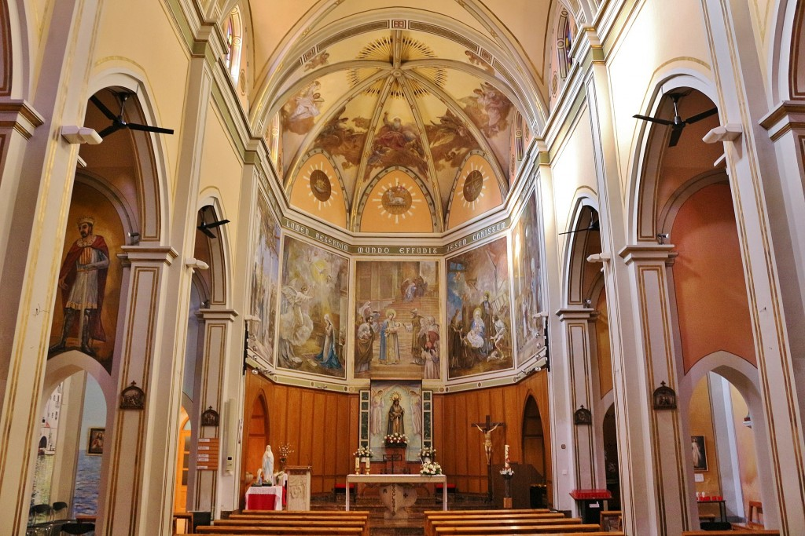

Es la iglesia principal del pueblo y está situada en la Plaça de l’Església, en el centro de L’Ametlla de Mar. La primera iglesia del pueblo se construyó alrededor de 1816, cuando el pueblo empezó a crecer. Con el tiempo se hicieron reformas y ampliaciones para adaptarla al aumento de población. Durante la Spanish Civil War, el edificio sufrió daños y destrucciones, como muchos otros edificios religiosos en España. Después de la guerra fue reconstruida y restaurada. Actualmente es un lugar importante para la vida religiosa y las fiestas del pueblo, como celebraciones patronales y actos tradicionales.
